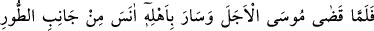
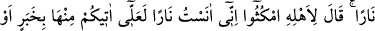
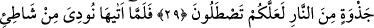
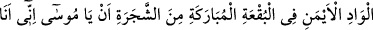
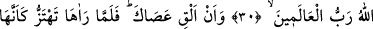
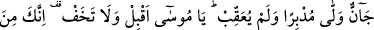
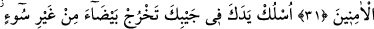
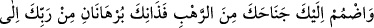
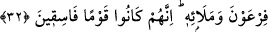
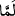

EY MÛSÂ!
BERİ GEL,
KORKMA!
29. Sonunda Mûsâ süreyi doldurup âilesiyle yola çıkınca, Tûr tarafından bir ateş
gördü. Âilesine: Siz (burada) bekleyin; ben bir ateş gördüm, belki oradan size bir
haber yahut ısınmanız için bir ateş parçası getiririm, dedi.
30. Oraya gelince, o mübarek yerdeki vâdinin sağ kıyısından, (oradaki) ağaç
tarafından kendisine şöyle seslenildi: Ey Mûsâ! Bil ki ben, bütün âlemlerin Rabbi
olan Allâh’ım.
31. Ve “Asânı at!” (denildi). Mûsâ (attığı) asâyı yılan gibi deprenir görünce,
dönüp arkasına bakmadan kaçtı. “Ey Mûsâ! Beri gel, korkma. Çünkü sen
emniyette olanlardansın” (buyuruldu).
32. “Elini koynuna sok; kusursuz, bembeyaz çıkacaktır. Korkudan (açılan)
kollarını kendine çek. İşte bu ikisi Firavun ve onun adamlarına karşı Rabbin
tarafından iki kesin delildir. Çünkü onlar, yoldan çıkan bir kavim olmuşlardır” (diye
seslenildi).
“Sonunda Mûsâ süreyi doldurup âilesiyle yola çıkınca …”
“ ” nin başındaki “fâ”; fâ-i fasîha’dır. Yâni Mûsâ (a.s.) bu iki akdi yapıp şart koştuğu
ve üzerine aldığı sorumlulukları yerine getirerek Şuayb (a.s.) ile anlaştıkları süreyi
tamamlayınca, demektir.